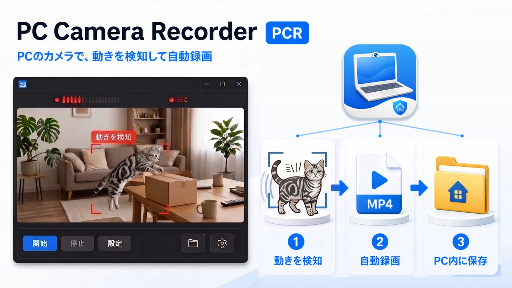

PC Camera Recorder
PCのカメラで動きを検知し、その瞬間だけをPC内に自動録画するWindowsアプリ。

留守中の部屋や玄関、ペットの様子を「見ておきたい」だけなのに、専用の防犯カメラを買って設置し、 クラウドの月額を払うのは重すぎる。このアプリは、すでに手元にあるPCのカメラをそのまま使う。 ノートPCの内蔵カメラでも、USBカメラでもよい。置いて監視を始めるだけで、 動きがあった瞬間だけがMP4で残る。
録画はそのPCの中にだけ保存される。外部へ送信する経路を持たない。
検知の数秒前から残す先行バッファを備えているので、「気づいた時にはもう始まっていた」を防げる。
動きが止まってから録画を閉じるまでの秒数、感度3段階、保存先、
監視する時間帯(18:00〜08:00 のように日をまたぐ指定も可)を曜日つきで指定できる。
通知領域に常駐し、アイコンの色で停止中／監視中／録画中が分かる。監視中はPCを自動スリープさせない
(画面は消えてよい)。
古い録画は日数・合計容量・ドライブ空き容量の3条件で自動削除できるが、 ここには安全側の制限を入れてある。消すのはこのアプリが付けた名前のままの録画だけで、 利用者が名前を変えた録画や、同じフォルダーにある他のファイルには触らない。 「フォルダーが際限なく育たないこと」より「消えて困る物を消さないこと」を優先した結果。
実測値
いずれも実機での測定値。丸めていない。
録画性能(Dell / Windows 11 25H2 build 26200 / 内蔵カメラ / 720p30 / 10分)—— フレームレート29.85 fps、フレーム欠落0、CPUは平均1.0%・最大3.3%、メモリ最大160.3 MiB、 記録時間の誤差 -0.18%、ビットレート8.96 Mbps(連続録画なら約97.1 GB/日 相当)。
8時間連続稼働(2026-08-15 10:31〜18:31 / Dell(Windows 11)とNEC(Windows 10 Pro)の2台並行)—— 録画回数はDell 442本 / NEC 568本(別日8時間の実測)、Large Object Heap最大61 MB(是正前は179 MB)、 ワーキングセット最大193 MB、GCによる停止時間は全経過時間の0.06%、例外0件、破損した録画0本。
自動試験は139件(Debug / Release)＋Store構成140件、Core 46件。3構成すべて失敗0。 対応OSはWindows 10 バージョン1809(build 17763)以降。
現状の制限・未検証
この製品はまだ出荷していません。以下は未解決または未検証。
メモリ関連の不具合が1件、未解決(出荷ブロッカー)。 長時間動かすと、録画1回ごとにOSのハンドルがわずかに残る。Dell(Windows 11)で1録画あたり2.4〜3.2個、 8時間で約1,400個増えた回もある。一方NEC(Windows 10)では0.1〜0.2個で、実質発生しない。
切り分けの結果、時間ではなく録画の回数に比例すること(66分の録画1本では、むしろ減った)、 GCを強制しても回収されないこと(531個溜まった状態で強制回収して、落ちたのは1割未満)、 ハードウェアエンコードを切ると消えること(同一機で有効 +2.64個/本 → 無効 -0.38個/本)まで分かっている。 ただしまだ確定とはしていない。A/Bの実行順が固定(常に有効→無効)で時間経過との交絡を排除できておらず、 実際にどのエンコーダが使われたかも未確認のため、順序を入れ替えた再試験が残っている。
未実装・未検証——USBカメラの抜き差しからの復帰は未実装。 ノートPCの蓋を閉じたときの動作は未対応で、案内も未整備。 スクリーンセーバー・画面消灯中の継続は実装したが実機で未検証。 Microsoft Store版(Package Identity付き)での試験は未実施。製品名とPackage Identityも未確定。
作りかた
C# / .NET 10(net10.0-windows10.0.17763.0)、画面はWPF、通知領域のみWinForms
NotifyIcon。映像は WinRT Media(MediaCapture / MediaFrameReader /
MediaStreamSource / MediaTranscoder)で扱い、
NV12のまま検知に回してから H.264 へエンコードしてMP4に書く——
検知の手前に色変換を挟まない構成にしている。試験はxUnit。
配布形態は自己完結の単一exe(.NETのインストール不要)で、Store版はMSIX。
姉妹プロジェクトに見張り番があるが、あちらはネットワークカメラ用で、 こちらはPCのカメラ用。対象が違う。
クラウドを使わないのは方針で、録画はそのPCの中だけに残る。 なお「防犯カメラの代わり」とは名乗っていない。暗所では映らないし、PCが動いていなければ録れない。
上の図はスクリーンショットではなく、公開用のデモ状態を再現したもの。ウィンドウはモックアップで、 映像部分に写っている室内と猫は生成画像。実際のカメラ映像ではない。